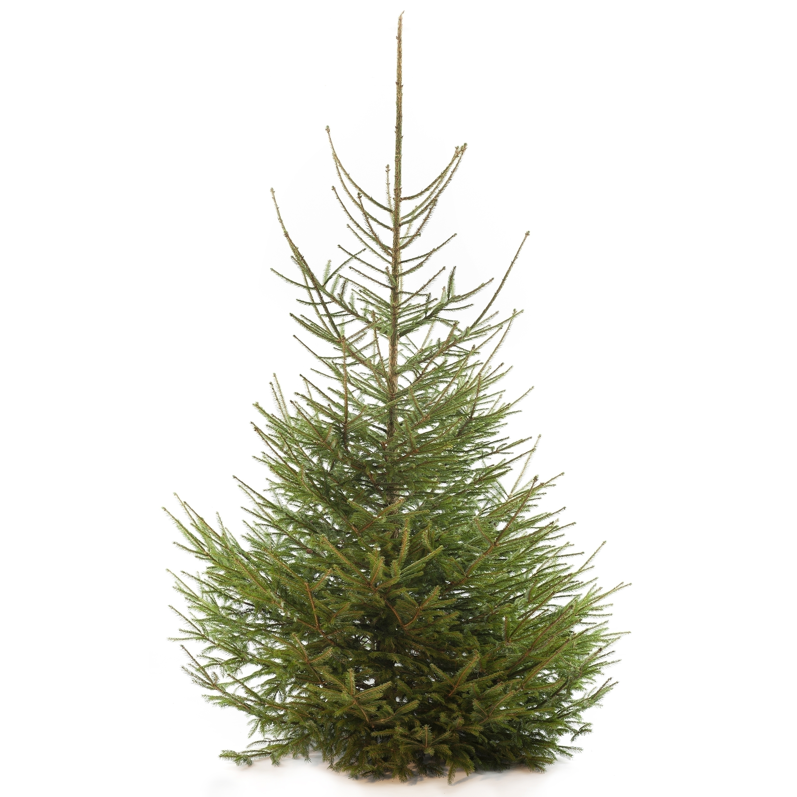
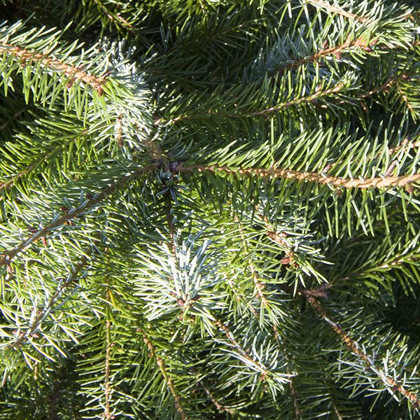
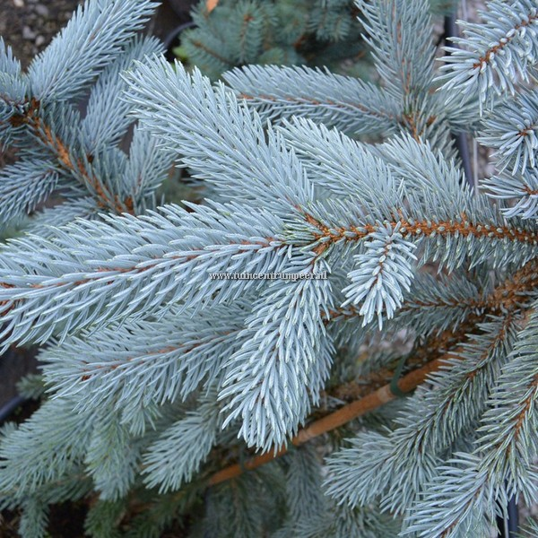
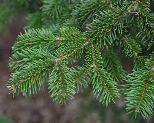

Kerstbomen
Welke kerstbomen zijn er?
De groene fijnspar
Dit is de bekendste kerstboom waarvan er rond Kerst miljoenen verkocht worden. Het is een groenblijvende naaldboom die de vorm van een kegel heeft.
De Servische spar
Dit is een wat smalle spar.In vergelijking met de gewone fijnspar houdt deze zijn naalden beter vast.Doordat de takken een beetje naar beneden hangen, krijgt de boom een sierlijk uiterlijk.
De Blauwspar
De naalden van de blauwspar zijn zoals de naam al zegt meer blauw van kleur. De boom verliest weinig naalden.
De Nordmann
De Nordmann heeft donkergroene naalden.De boom staat bekend om het feit dat hij bijna geen naalden verliest.Kerstbomen van dit soort kunnen maar liefst 20 meter hoog worden!